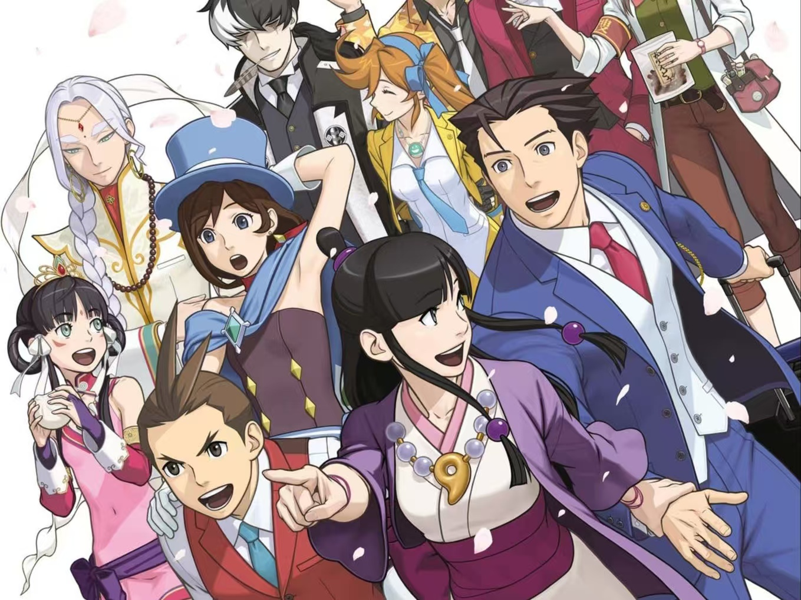

逆转裁判
《逆转裁判》是一款由卡普空公司开发的法庭推理游戏，最初于2001年发行于日本Game Boy Advance平台。游戏以其独特的法庭辩论和侦探元素相结合的游戏方式而受到广泛好评。
游戏玩法：游戏主要分为“法庭部分”和“侦探部分”。在“调查”中，玩家可以收集证据和证言，通过与相关角色的对话和对现场的勘查来获取信息。在“法庭”中，玩家需要使用收集到的证据来质疑证人和检察官的证词，通过推理来揭示案件的真相，为委托人争取无罪的判决。
剧情设计：游戏的剧情设计巧妙，每个案件都充满了悬念和推理元素，玩家在解谜的过程中不断感受到刺激和成就感。剧情中还融入了一些超科学的手段，如金属探测器、多米诺鉴定血迹和指纹系统等，增加了调查的趣味性。
角色塑造：游戏中的角色个性鲜明，形象独特，每个角色都有自己的背景故事和心路历程，使得游戏剧情更加丰富多样。
游戏特色：《逆转裁判》还以其独特的“逆转”元素而著名，即通过抽丝剥茧般的推理，最终实现案件的逆转胜。这种逆转元素使得游戏充满了紧张感和趣味性。